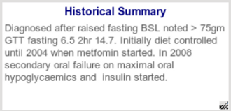

|  |
- The purpose of this, as described previously is to allow other clinicians to be able to understand where the patient is at
with the particular health issue, to be able to take over, if you are not present.
- Though this sounds like it would take up alot of space, it is by definition a summary and should be kept brief but
with enough information to be informative.
|